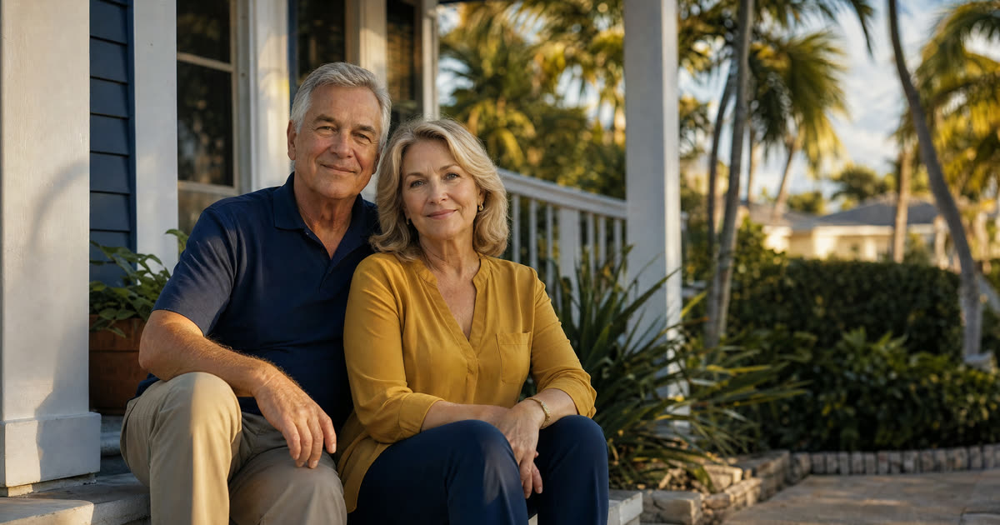

Lisa's Situation: What the Deed Already Did
Lisa is 54 and lives in Ocala. Her mother passed away last month, and Lisa found herself holding a certified death certificate and a deed with her name on it, unsure what came next. (Lisa is a composite example built from situations Florida families commonly face, not an actual Truestead client.)
Here is the short version of what already happened, without Lisa having to do anything: her mother's lady bird deed (an enhanced life estate deed) let her mother keep full control of the Ocala house for the rest of her life, including the right to sell it or change her mind entirely. Because her mother never revoked the deed, the house passed directly to Lisa the moment her mother died, by operation of Florida property law, with no probate court involved for this asset. Lisa did not need a new deed. She did not need a judge's order. The title already moved. What remains is a short list of practical steps to reflect that change in the public record and with the companies that touch the house.
Have this exact situation? Talk it through with a Florida attorney — the 20-minute consultation is free.
Book Free Consult or call (888) 388-8445Step 1: Get and Record a Certified Death Certificate
The first real task is recording a certified copy of the death certificate (not a photocopy) in the official records of the county where the property sits. For Lisa, that means the Marion County Clerk of Court.
- Order several certified copies from the county's vital statistics office or the funeral home, since you will need extras for banks, insurers, and the property appraiser.
- Take one certified copy to the Clerk's recording office (or file it electronically through an approved e-recording vendor) and have it recorded against the property.
- Ask the clerk whether the county wants an accompanying affidavit. Practice varies by county: some clerks or title companies want a short affidavit identifying the deceased owner, the property, and confirming the beneficiary's identity, sometimes called an affidavit of death or affidavit confirming the life tenant's death. If the owner was married and the deed involved homestead property, a title professional may also want an affidavit addressing the marital status and homestead use at the time of death.
There is no fixed deadline in the way probate has deadlines, but recording promptly (within the weeks after death, not years later) keeps the chain of title clean and avoids questions later if you decide to sell or refinance.
Step 2: Contact the Property Appraiser About Homestead
Once the death certificate is recorded, contact the county property appraiser's office (Marion County, in Lisa's case) to update the ownership record. This is a separate step from recording, and it matters for taxes.
Her mother's own homestead exemption and Save Our Homes assessment cap do not automatically transfer to Lisa. The property will generally be reassessed at just value for the new owner. If Lisa moves into the house and makes it her permanent residence, she can apply for her own homestead exemption. If she already owns and homesteads another Florida property, she may be able to bring some portability benefit from that prior homestead, but that is a narrow rule that depends on her own homestead history, not her mother's.
Step 3: Update Insurance, Utilities, and the Mortgage
With title now in her name, Lisa should act on the practical side of ownership fairly quickly, ideally within the first month or two:
- Homeowners insurance: Contact the insurer to switch the policy into her name. A policy still listing a deceased owner can create real problems if there is ever a claim.
- Utilities: Move electric, water, and any other services into her name so there is no lapse in service or billing confusion.
- Mortgage, if any: If the home still carries a mortgage, notify the loan servicer of the owner's death and provide the recorded death certificate. Federal law generally prevents a lender from calling a loan due simply because the property passed to a relative at death, but the beneficiary still has to keep payments current or arrange to refinance. Ignoring the loan is the one thing that can create real trouble here.
Step 4: Know What the Deed Did Not Cover
The lady bird deed handled the house. It did not necessarily handle everything else her mother owned. If her mother also had a bank account titled only in her own name, a car, or personal property without a beneficiary designation, those assets may still need to go through probate in Florida, separately from the house.
This is a common point of confusion. Families sometimes assume that because the home avoided probate, the whole estate did too. Lisa should take stock of what else her mother owned and, if there are other assets without a clear beneficiary or joint owner, talk with a Florida probate attorney about whether a probate proceeding is needed for those items.
Where Lisa Lands
For Lisa, the process is really about follow-through rather than legal complexity. The lady bird deed already did the hard work years ago, when her mother signed it in front of two witnesses and a notary and had it recorded in Marion County. Her mother kept the right to live in the house, sell it, or revoke the deed for the rest of her life, and never did. When she passed, the house passed to Lisa outside of probate, automatically.
What Lisa needs now is simply to record the death certificate, update the property appraiser, switch over insurance and utilities, and stay current on any mortgage, while keeping an eye on whether her mother left other assets that do need probate. Truestead prepares Florida lady bird deeds for a flat $199 self-guided or $399 attorney-prepared including recording, for families setting one up now, and can also help beneficiaries like Lisa confirm the after-death paperwork is done correctly.
Frequently Asked Questions
The Truestead Takeaway
Lisa's situation is a good example of what a properly executed Florida lady bird deed is designed to do: keep the parent in full control during life, and hand the house to the named beneficiary at death without a probate proceeding. The deed already finished its main job the moment her mother passed. What is left for Lisa is administrative, recording the death certificate and any needed affidavit, updating the homestead exemption, and switching over insurance, utilities, and the mortgage account. If your family is in a similar spot, or if you are the one who wants to set up a lady bird deed for your own home before that day comes, it is worth having a Florida attorney confirm the deed's language and the paperwork trail, particularly if there are other assets, multiple beneficiaries, or a mortgage involved.
Have a child turning 18? Get the free 18 & Protected packet — the legal documents every Florida 18-year-old needs.
Get the Free PacketGet Your Florida Lady Bird Deed
Truestead prepares Florida Lady Bird (enhanced life estate) deeds: $199 self-guided from your answers, or $399 attorney-prepared and recorded for you, with the homestead and documentary-stamp guardrails the form sites skip.
Start Your Lady Bird Deed →This article is for general informational purposes only and does not constitute legal advice, nor does reading it create an attorney-client relationship. Florida estate, elder, probate, and real estate law are fact-specific and change over time. Consult a licensed Florida attorney about your individual circumstances. Arthur Simpson, Esq. is licensed to practice law in the State of Florida. Attorney advertising.
Talk to a Florida Attorney — Free 20-Minute Consultation
Pick a time below. No obligation, no pressure — just answers.